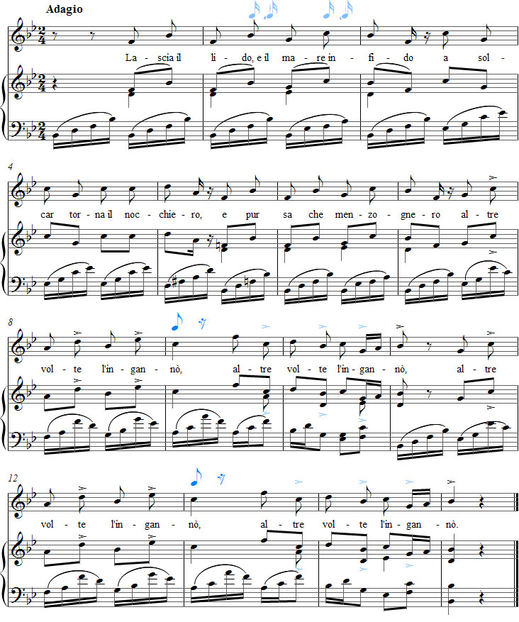

Vaccaj: Tehtävä 2a
Kuuntele äänite
Nuotit

Sanat
Intervalli di quarta
Kvartti-intervalleja
kyntää uudelleen petollisia
aaltoja tietäen, että meri on muina
kertoina hänet pettänyt.
Esitysohjeet
Tässä tehtävässä harjoitellaan kvartti-intervallia, joka on melko helposti löydettävissä, mutta vaikea laulaa sitoen. Intervallin kulmikkuus edellyttää tietoista ilmavirran ohjaamista, jos pyritään laulamaan se legatona.
Exercisestä on olemassa kaksi Vaccajn kynästä lähtöisin olevaa versiota; mm. Ricordin ja Petersin editioissa on aksentit fraaseissa 4 ja 6, Booseyn ja Patonin versioissa niitä ei ole. Laulun harjoittelutavat voivat vaihdella riippuen käytettävästä versiosta.
Kvartti-intervallin luonteeseen sopii Vaccajn valitsema merta käsittelevä teksti. Laulun jokainen fraasi alkaa tahdin puolivälistä ja viimeinen niistä toistetaan kolme kertaa. Ensimmäisessä fraasissa Vaccaj myötäilee Metastasiota, mutta sen jälkeen syntyy tietty mielenkiintoinen vastakkainasettelu. Vaccaj ei esimerkiksi painota a ja e -sanoja. Huomioimatta jää myös sanan torna ensimmäiselle tavulle kuuluva painotus.
Ristiriita pianostemmassa tahdeissa 10 ja 14 ei ole virhe.
Harjoitteluohjeita
Kokematon oppilas voi kokeilla kvarttihyppyjen täyttämistä asteikon sävelillä eli tavallaan improvisoida. Hidas tempo auttaa tässä, samoin oppilaan intensiivinen keskittyminen. Vaccaj saattoi ajatella että kolmen ensimmäisen fraasin keskittynyt laulaminen legatona riittää. Aksentoidussa versiossa nimittäin neljännestä fraasista lähtien oppilas voi rentoutua ja siirtyä korostuneeseen ja mutkattomaan non legatoon. Laulun jälkiosassa oppilas saa siten osoittaa hallitsevansa kvartit suoraviivaisesti.
Aksentoimattomassa versiossa voidaan luopua täytenuoteista ja sen sijaan keskittyä laulamiseen legatissimo.
Tästä laulukoulun kolmannesta laulusta alkaen Vaccaj tavuttaa sanat perinteisellä tavalla. Siitä huolimatta on tarkoituksenmukaista ajatella jatkuvasti tavuja avoimina.
Voit työskennellä esimerkiksi tavujen va-vi tai va-vo kanssa. Näistä toisen tavun suljetumpi ominaisuus voi estää ylöspäisen kvartin tahatonta voimistumista. Alaspäisissä kvarteissa lauletaan esim. vi-va ja saadaan silloin todennäköisesti aikaan luonteva kahdeksasosien painotus.
Laulustemman tahteihin 9 ja 13 voidaan merkitä kahdeksasosatauko toiselle kahdeksasosalle, kuten Vaccaj itse teki tahdissa 11. Sanan l'ingannò loppuvokaali on tietenkin painotettu, mutta lyhyt.
Hitaassa tempossa laulettaessa fraasit vaativat niin paljon ilmaa, että kaikkiin hengitystaukoihin voidaan mainiosti panna fermaatti.
Sana altre on yksi niistä sanoista Metodo praticossa, jossa esiintyy peräkkäin kolme konsonanttia. Se täytyy siksi artikuloida kohtuullisen energisesti.
Pianistin on mahdollisimman nopeasti säestettävä vain vasemmalla kädellä.
Laulaja voi painottaa aksentoituja ääniä antamalla niiden tulla kuudestoistaosan ennenaikaisesti.
Exercisen voi kokeilla joskus laulaa kokonaan liioitellulla portamentolla (harjoituksen 13a tapaan). Vaihtelun vuoksi voi fraaseissa 4 ja 6 kokeilla portamento di sottoa (ks. harjoitus 13b).
Ajatuksia tulkinnasta
Syy takapainotteisten aksenttien laulamiseen voisi olla järkytys meren petollisesta käyttäytymisestä tai yritys kuvata myrskyävää merta. Jo runon toisella rivillä kohdataan ”pelko” painottamalla viimeistä tavua sanassa torna. Tämä on välttämätön seuraus siitä että italialaisessa runoudessa ei hyväksytä kahta painotusta peräkkäin, eikä siten voida painottaa solcar sanan viimeistä tavua heti torna sanan ensitavun kanssa.
Versiosta riippumatta tempon pitää olla niin hidas, että syntyy vaikutelma maan vastentahtoisesta jättämisestä. Aksentoimattomassa versiossa on erinomainen mahdollisuus harjoitella erilaisia vivahteita neljässä viimeisessä fraasissa.
Muuta
Takapainotus esiintyy suhteellisen usein esimerkiksi italialaisessa canzone-tyylissä (esim. Santa Lucia). Sitä käyttivät myös mm. Rossini ja Bellin (vrt. Metastasion tekstiin sävelletty Ch'io mai vi possa Rossinin Soirées musicalesissa).
Forshufvud, G. 1994. Con lieve fiato. Lärarhandledning till Nicola Vaccajs Metodo pratico. Göteborgs universitetet.